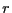
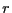

Next: Case Study 4 (F&S
Up: Monte Carlo Simulation
Previous: Case Study 2: MC
Case Study 3: Hard-Disk Dumbbells in 2D
In this case study, we consider a slightly different system than the
hard-disk system in the previous case study. Here, we imagine that
pairs of disks are tethered together to form dumbbells. The
``bond-length'' of a dumbbell is a constant parameter,  . We will
again confine the dumbbells to a circle.
. We will
again confine the dumbbells to a circle.
|
Configuration snapshot of a system of hard-disk-dumbbells.  = 200
particles, = 200
particles,  = 0.5, and = 0.5, and  = 11.3. = 11.3.
|
|
What is new is how we have to consider the trial moves for this
system. We cannot simply select a random particle and try to displace
it, because this is likely to violate the constant bond-length of the
dumbbell that particle belongs to. How then do we generate new
configurations? A simple idea is to use two kinds of trial
moves, translation of entire dumbbells and rotation of dumbbells
around their centers of mass. This was originally presented in
Sec. 3.3.3. In order to implement an MC code with more
than one trial move, we must include a ``trial move selection rule''
which randomly selects a trial move based on their user-defined
``weights''.
The code hdb.c
implements a MC simulation
of hard-disk dumbbells. Consider the following question: Does the
acceptance ratio of rotational moves depend upon the weight given to
displacement moves? Why or why not? Below is a plot of the
acceptance ratio vs. the maximum displacement for a system of 100
dumbbells at a density of 0.5, for various displacement move weights
between 0.1 and 0.9. As you can see, there appears to be no effect
on the acceptance of trial displacements if we change how frequently we perform them relative to trial rotations.
|
|
Acceptance ratio vs. maximum dumbbell displacement for various displacement trial move weights between 0.1 and 0.9. = 200 (100 dumbbells), = 0.5, and = 11.3.
|
|
As a second suggested exercise (one of an advanced nature, suitable
for a course project), we can use this code to explore the liquid
crystalline nature of the dumbbell fluid. Because the dumbbells are
slightly elongated along one direction, they may tend to line up in a
dense liquid. For dumbbell  , let the quantity represent
the angle made by the interparticle segment and some global coordinate
frame axis (say the
, let the quantity represent
the angle made by the interparticle segment and some global coordinate
frame axis (say the  axis). We could use this code to
compute the average orientation,
as a function
of density and temperature. The problem is that if the system is
truly a liquid, even if large numbers of dumbbells are lined up at any
one time, the system will slowly evolve so that all dumbbell
orientations are eventually realized. So
is
probably not so interesting to calculate. What would be interesting
would be to assess the effect of the confining circle on the spatially
resolved orientation field,
. You
could construct a 2D histogram of orientation and perform MC to
populate it. But because the system is nominally cylindrically
symmetric, it would suffice to consider a one-dimensional field,
. Plot
vs. 
for various densities and temperatures.
axis). We could use this code to
compute the average orientation,
as a function
of density and temperature. The problem is that if the system is
truly a liquid, even if large numbers of dumbbells are lined up at any
one time, the system will slowly evolve so that all dumbbell
orientations are eventually realized. So
is
probably not so interesting to calculate. What would be interesting
would be to assess the effect of the confining circle on the spatially
resolved orientation field,
. You
could construct a 2D histogram of orientation and perform MC to
populate it. But because the system is nominally cylindrically
symmetric, it would suffice to consider a one-dimensional field,
. Plot
vs. 
for various densities and temperatures.
A third suggested (advanced) exercise would be to measure an orientational correlation function. Here, we let the quantity
be the relative angle between the segments of
dumbbells and  . You can use the code to accumulate statistics
on as a function of , where is the
center-of-mass-to-center-of-mass distance of the two dumbbells. It is
actually better to accumulate statistics of the following polynomial
of the cosine
of :
. You can use the code to accumulate statistics
on as a function of , where is the
center-of-mass-to-center-of-mass distance of the two dumbbells. It is
actually better to accumulate statistics of the following polynomial
of the cosine
of :
as a function of will reveal the character of
the liquid-crystalline-like ordering of the dumbbells; this is the
orientational correlation function. When two dumbbells are aligned,
is unity, and therefore  approaches unity.
When two dumbbells are perpendicular, is -0.5. The average,
at a particular distance , will range between
-0.5 and 1.0, for perfectly perpendicular to perfectly aligned, and 0
implies no preferred orientation. Try to hypothesize how
behaves as one changes temperature and density.
approaches unity.
When two dumbbells are perpendicular, is -0.5. The average,
at a particular distance , will range between
-0.5 and 1.0, for perfectly perpendicular to perfectly aligned, and 0
implies no preferred orientation. Try to hypothesize how
behaves as one changes temperature and density.
A final note: Since this is a 2D system, we don't use the second
Legendre polynomial of  :
:
The reason for this is clear. Suppose is the probability
distribution of the angle  . Now, since the molecules are not
polar (they have no head or tail), is meaningful only
on the domain
. Suppose further that there
is no preferred angle; i.e.,
. Now, since the molecules are not
polar (they have no head or tail), is meaningful only
on the domain
. Suppose further that there
is no preferred angle; i.e.,  is a constant. In 2D, normalization
requires
is a constant. In 2D, normalization
requires
and in this case, with no preferred orientation, the average of is
And Eq. 88 will have the described behavior. The second Legendre polynomial evaluates
to zero when is , which is indeed what
evaluates
to when is a constant in three dimensions.
Next: Case Study 4 (F&S
Up: Monte Carlo Simulation
Previous: Case Study 2: MC
cfa22@drexel.edu